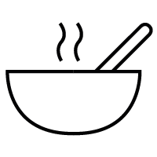
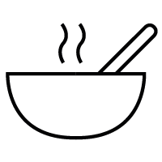

256,46€
MEs el mejor vino que se ha elaborado hasta la fecha de esta saga y uno de los más grandes vinos de la bodega del último medio siglo y que se hayan elaborado en España
Es un vino amplio, complejo y especiado, muy bien estructurado, con fruta muy madura y unos taninos potentes y golosos, con una persistencia larga y duradera.
Armoniza bien con jamón, quesos no muy curados, guisos con salsas no muy especiadas, legumbres cocidas o guisadas, aves, carnes rojas, carnes a la parrilla y asados.


 

Cuidada selección de uvas de nuestra propiedad de la variedad Tempranillo, de viñas de más de 80 años de edad.